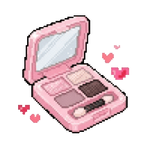

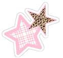
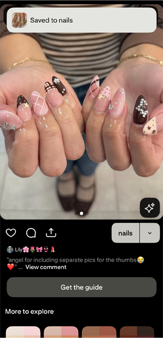
I got bored on the treadmill during my workout and went onto Pinterest to look at nail inspo. I'm scouting for my next set. Wish me luck -- i'm very indecisive.
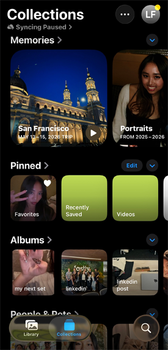
Oftentimes, I look back on my camera roll to reminisce on things varying from 7 years ago to yesterday's matcha. Nostalgia will be the death of me -- so would the lack of respect for my iphone storage.
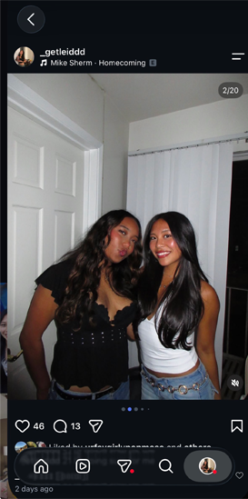
One thing I live for is curating instagram dumbs for my spam account aka "finsta". They're fun and care-free unlike my main account. Although, they are both curated with thoughtfulness. #vibes
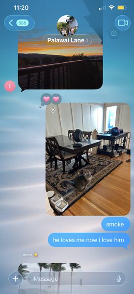
My parents live back home in Hawai'i and my older sister and I live in the states. We update each other on our family groupchat constantly. Our texts heavily consists of our pets. Here is my friend's cat named "Smoke" whom I recently became aquainted with.
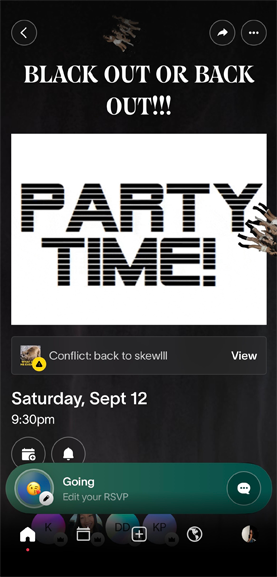
This is me on the partiful app looking at an upcoming invitation I had at the time -- I had a lot of fun. This is where how I manage my functions basically.
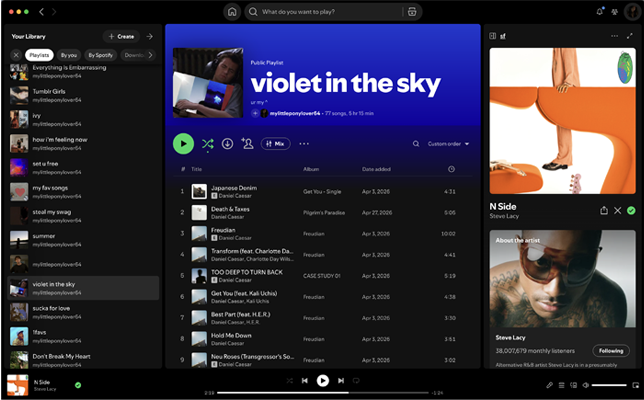
Spotify is my most used app. I am an avid music consumer/lover. Music is my soul, my soul is music. I would die without it and Spotify is the medium I chose to keep my lifeline. This is Spotify on my macbook while I'm doing work.
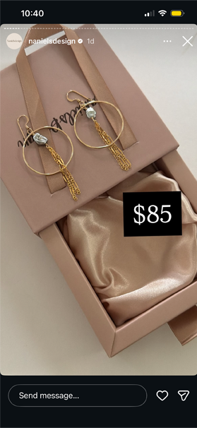
I buy a lot of my Hawai'i-local jewerly through small buisinesses on instagram. This is a pic of some really cute earrings I debated buying.
On tiktok I doomscroll, but I also frequently stalk my own reposts. No, i'm not ashamed -- they're goated.
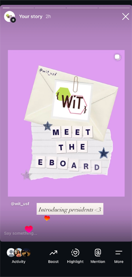
I'm the Marketing Chair of Women in Tech and I created the new e-board intro posts. This is me advertising them on our ig story -- follow @wit_usf !!
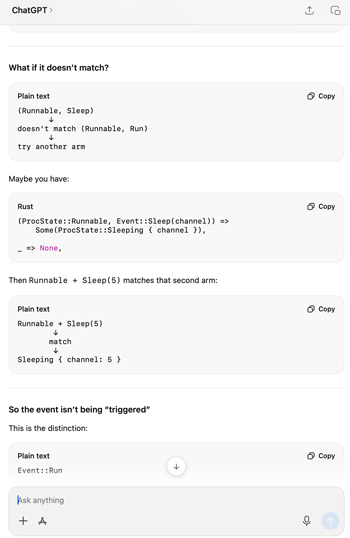
This is me using ChatGPT to help me explain my Operating Systems class concepts.
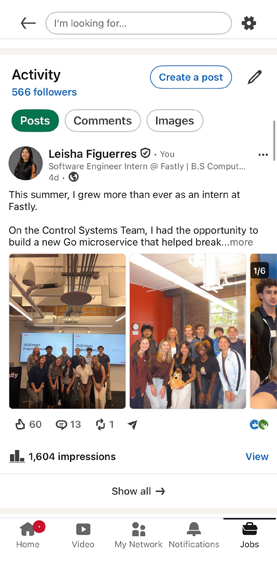
I hate going on LinkedIn, but I made a post recently so I need to stalk.
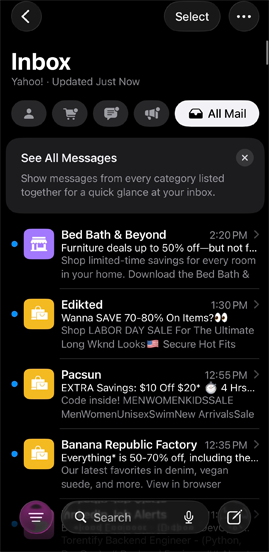
Back then, when I was actively applying to internships, I literally checked my emails probably every 30 minutes. Now it's not as bad but, it's still a good habit to check.
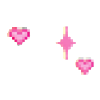
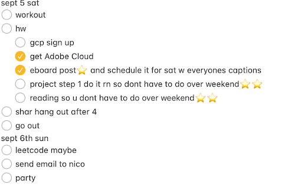
My notes app is an example of “if it’s not written down, it doesn’t get done”. This thing is basically the runner of my life. I can’t function without it. I am also unable to use anything else to organize the tasks I need to do. I’ve tried Notion and other planner-type apps, and nothing registers in my brain quite as well as the simple Notes app does. It’s my own organized chaos. I check it atleast once an hour, I believe.
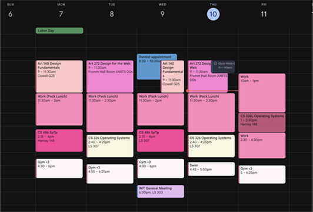
Google Calender is how I know my day to day schedule. I try to put most events I have during the day and have my actual to-do list on the notes app. I took time to make it pretty and pink so I'm not as overwhelmed during busier times.
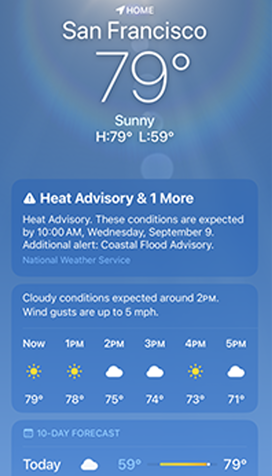
I check the weather app everyday before I go outside. I usually hope for a sunny day and i'm usually dissapointed by the SF cold.